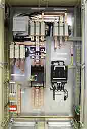
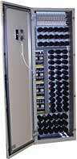

Controlling
Power Quality from Wind Turbines

 Most
people think of the controller as the unit which runs the wind
turbine, e.g. yaws it against the wind, checks that the safety
systems are OK, and starts the turbine.
Most
people think of the controller as the unit which runs the wind
turbine, e.g. yaws it against the wind, checks that the safety
systems are OK, and starts the turbine.
 The controller does indeed do all these things,
but it also looks after the power quality of the current generated
by the wind turbine.
The controller does indeed do all these things,
but it also looks after the power quality of the current generated
by the wind turbine.
Grid
Connection and Power Quality
In the section about power
quality you will learn how electricity companies require
that wind turbines connect "softly" to the grid, and
how they have certain requirements that the alternating current
and voltage move in step with one another.
 The image to the right shows the high voltage
section of a controller for a megawatt machine. This part of
the controller operates e.g. the thyristors
which ensure soft coupling to the electrical grid.
The image to the right shows the high voltage
section of a controller for a megawatt machine. This part of
the controller operates e.g. the thyristors
which ensure soft coupling to the electrical grid.
Reactive
Power Control
 Voltage
and current are typically measured 128 times per alternating
current cycle, (i.e. 50 x 128 times per second or 60 x 128 times
per second, depending on the electrical grid frequency). On this
basis, a so called DSP processor calculates the stability of
the grid frequency and the active and reactive power of the turbine.
(The reactive power component is basically a question of whether
the voltage and the current are in phase or not).
Voltage
and current are typically measured 128 times per alternating
current cycle, (i.e. 50 x 128 times per second or 60 x 128 times
per second, depending on the electrical grid frequency). On this
basis, a so called DSP processor calculates the stability of
the grid frequency and the active and reactive power of the turbine.
(The reactive power component is basically a question of whether
the voltage and the current are in phase or not).
 In order to ensure the proper power quality,
the controller may switch on or switch off a large number of
electrical capacitors which adjust the reactive power, (i.e.
the phase angle between the voltage and the current). As you
can see in the image to the left, the switchable capacitor bank
is quite a large control unit in itself in a megawatt sized machine.
In order to ensure the proper power quality,
the controller may switch on or switch off a large number of
electrical capacitors which adjust the reactive power, (i.e.
the phase angle between the voltage and the current). As you
can see in the image to the left, the switchable capacitor bank
is quite a large control unit in itself in a megawatt sized machine.
Electromagnetic
Compatibility (EMC)

 There
are very powerful electromagnetic fields around power cables
and generators in a wind turbine. This means that the electronics
in the controller system has to be insensitive to electromagnetic
fields.
There
are very powerful electromagnetic fields around power cables
and generators in a wind turbine. This means that the electronics
in the controller system has to be insensitive to electromagnetic
fields.
 Conversely, the electronics should not emit
electromagnetic radiation which can inhibit the functioning of
other electronic equipment. The image to the left shows a radiation
free room with metal walls in the laboratory of one of the largest
wind turbine controller manufacturers. The equipment in the room
is used to measure electromagnetic emissions from the components
of the controllers.
Conversely, the electronics should not emit
electromagnetic radiation which can inhibit the functioning of
other electronic equipment. The image to the left shows a radiation
free room with metal walls in the laboratory of one of the largest
wind turbine controller manufacturers. The equipment in the room
is used to measure electromagnetic emissions from the components
of the controllers.
© Copyright 2000 Soren Krohn. All rights reserved.
Updated 6 August 2000
http://www.windpower.org/tour/wtrb/control2.htm